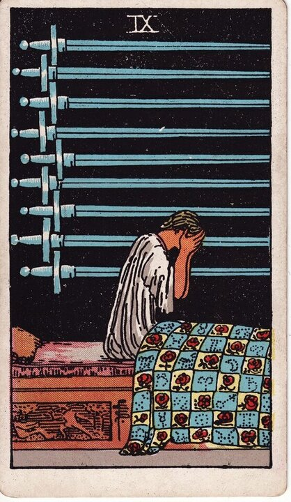

Minor Arcana · Suit of Swords
Nine of Swords Tarot Card Meaning
The Nine of Swords is the 3am card - anxiety, dread, the mind catastrophising in the dark. Want to know what it means in your spread? Every reader on our line is hand-vetted - connect in under 60 seconds, $1 for your first minute, hang up anytime.
- Hand-vetted readers
- Available 24/7
- Hang up anytime

Nine of Swords - What It Shows
A figure sits up in bed at night, head in hands, nine swords mounted on the dark wall behind. The bed is carved with a scene of grief. Crucially, the swords are on the wall, not in the figure - the pain is in the mind, not the body. After the trap of the Eight, the Nine is what keeps you awake inside it: fear, worry, and the catastrophic stories the mind tells at night.
Nine of Swords Upright Meaning
Upright, the Nine of Swords is anxiety, fear, sleeplessness, and dread. Worry that loops, guilt, or worst-case thinking that feels enormous in the dark. The card's quiet mercy: the swords are on the wall - much of this suffering lives in the mind, larger than the situation itself. Its core message is the fear is real but probably bigger than the facts.
Nine of Swords Reversed Meaning
Reversed, the night passes. Hope returning, facing the fear and finding it smaller than imagined, recovery, reaching out for help. Less positively, it can be anxiety deepening, despair, or refusing to face what's looping.
Nine of Swords in Love & Relationships
In love, the Nine of Swords is worry, overthinking, insecurity, or fear about a relationship - usually amplified by the mind. Example: a caller spiralling about what a partner's silence "meant" drew this card; the read named the catastrophising directly - the dread was real but largely self-generated, and the antidote was a real conversation, not more 3am theories.
Nine of Swords in Career & Money
For work it's stress, dread about a decision or outcome, or anxiety keeping you up. Example: someone losing sleep over a feared work scenario pulled this card; the message validated the stress while pointing out the mind was running ahead of the facts - naming the actual worst case usually shrinks it.
Nine of Swords as Advice
As advice: get the fear out of your head and into the light. Say the worst case out loud, check it against facts, reach out to someone - the swords stay on the wall when you stop facing them alone in the dark.
Nine of Swords Reversed in Love & Career
Reversed, this card deserves a closer look by area. In love, the hopeful read is anxiety easing - facing a fear about the relationship and finding it survivable, or the worst worry passing; the harder read is dread deepening, or refusing to address what's keeping you up. In career, reversed it's stress lifting and perspective returning, or anxiety hardening into burnout. The reversed Nine's question is whether the fear is releasing its grip or tightening it. A live reader can help you tell the difference.
What People Ask About the Nine of Swords
The questions readers hear most about this card:
"Is the bad thing I fear going to happen?"
Often the card is about the fear itself being outsized - not a prediction of doom.
"Nine of Swords as feelings?"
Anxious, guilty, overthinking - "I can't stop worrying about this."
"Why do I keep getting it?"
A sign a worry loop needs addressing, not avoiding.
"Is there hope?"
Yes - the pain is largely mental; reversed especially points to relief.
Nine of Swords - Yes or No?
Leans no, dominated by fear - though the dread is often worse than the outcome. Reversed shifts toward yes as fear eases.
Nine of Swords Timing in a Reading
Timing is the least precise thing tarot does, so treat this as a lean, not a date. The Nine of Swords describes a worry state more than an event - readers usually frame it as present and lasting until the fear is faced, not a set number of days. Reversed signals the worst is passing. A live reader reads timing from the full spread and your question far more reliably than the card alone.
Nine of Swords Card Combinations
Context changes everything - a few pairings readers see often:
Nine of Swords + Eight of Swords
Anxiety building a feeling of being trapped.
Nine of Swords + The Star
Hope and healing arriving after a dark, sleepless stretch.
Nine of Swords + Ten of Swords
Dread of an ending - often worse anticipated than experienced.
Nine of Swords in a Tarot Reading
A meanings page is the map; a live reading is the territory. The Nine of Swords shifts with its position and the cards around it - which is what a hand-vetted reader interprets for your question. See the full Suit of Swords, all 56 cards on the Minor Arcana hub, or start a phone tarot reading.
← Eight of Swords · Next: Ten of Swords →
What Does the Nine of Swords Mean for You?
A meanings list is the map; a live reading is the territory. We'll connect you with the right hand-vetted tarot reader in under 60 seconds. $1/min first call · 15 minutes for $10 · hang up anytime · 100% satisfaction promise.
Call (888) 920-6662 NowNine of Swords - Frequently Asked Questions
What does the Nine of Swords mean?
Anxiety, fear, and worry - sleepless dread, often heavier than the facts warrant.
What does it mean reversed?
Hope returning and the worst passing - or anxiety deepening.
What does the Nine of Swords mean in love?
Worry, overthinking, or insecurity about a relationship, amplified by the mind.
Is it a yes or no card?
Leans no, fear-dominated; reversed shifts toward yes as fear eases.
How much does a reading cost?
First-time callers pay $1/min, or 15 minutes for $10, and you can hang up anytime.
Get Your Tarot Reading Now
Connected to a hand-vetted reader in under 60 seconds, the cards pulled on your real question, and you hang up with clarity.
Call (888) 920-6662